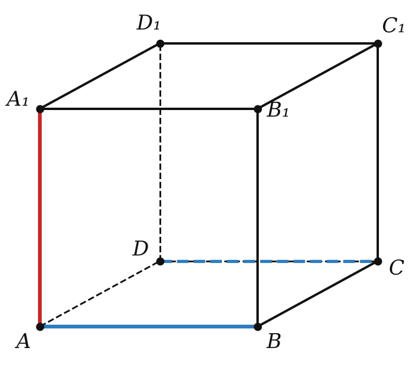
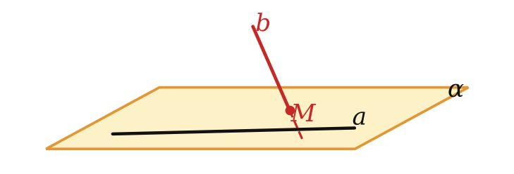
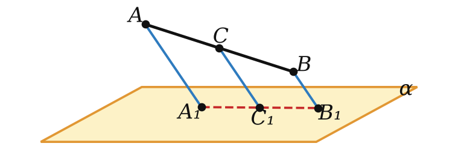

ОпределениеПараллельные: лежат в одной плоскости и не пересекаются.
Скрещивающиеся: не лежат в одной плоскости.

Геометрия · 10 класс · углублённыйУрок 4 · Взаимное расположение двух прямых в пространстве
Итог
Три случая
в одной плоскости
общие точки
пересекаются
да
одна
параллельны
да
нет
скрещиваются
нет
нет
Геометрия · 10 класс · углублённыйУрок 4 · Взаимное расположение двух прямых в пространстве
Теоремы 4.1 и 4.2
Свойства параллельных
Теоремы4.1. Через две параллельные прямые проходит единственная плоскость.
4.2. Через точку вне прямой проходит единственная прямая, параллельная данной.
Геометрия · 10 класс · углублённыйУрок 4 · Взаимное расположение двух прямых в пространстве
Теорема 4.3
Признак скрещивающихся прямых
ПризнакЕсли одна прямая лежит в плоскости, а другая пересекает плоскость в точке вне первой прямой, то прямые скрещиваются.

Геометрия · 10 класс · углублённыйУрок 4 · Взаимное расположение двух прямых в пространстве
Пример
Средняя линия в пространстве
AA₁ ∥ CC₁ ∥ BB₁ — все в одной плоскости
AA₁B₁B — трапеция
CC₁ = (7 + 13) : 2 = 10

Геометрия · 10 класс · углублённыйУрок 4 · Взаимное расположение двух прямых в пространстве
Практика
Задачи урока
№ 1
Сколько рёбер куба ABCDA₁B₁C₁D₁ скрещиваются с ребром AB?
№ 2
Сколько рёбер треугольной призмы ABCA₁B₁C₁ скрещиваются с ребром AB?
№ 3
Как расположены прямые AD и BC, содержащие рёбра тетраэдра DABC? Обоснуй.
№ 4
Конец A отрезка AB лежит в плоскости α, точка C ∈ AB, AC = 4, CB = 8. Параллельные прямые через B и C пересекают α в B₁ и C₁, BB₁ = 18. Найди CC₁.
Геометрия · 10 класс · углублённыйУрок 4 · Взаимное расположение двух прямых в пространстве
Практика
Задачи урока
№ 5
Точки A и B лежат по одну сторону от плоскости α, C — середина AB. Параллельные прямые через A, B, C пересекают α в A₁, B₁, C₁, AA₁ = 9, BB₁ = 5. Найди CC₁.
№ 6
В условии задачи 5 точки A и B лежат по разные стороны от α. Найди CC₁.
№ 7
Верно ли, что две прямые, не имеющие общих точек, параллельны?
№ 8
Как расположены прямые куба ABCDA₁B₁C₁D₁: а) BD и B₁D₁; б) BD и CC₁; в) A₁C и BD₁?
Геометрия · 10 класс · углублённыйУрок 4 · Взаимное расположение двух прямых в пространстве